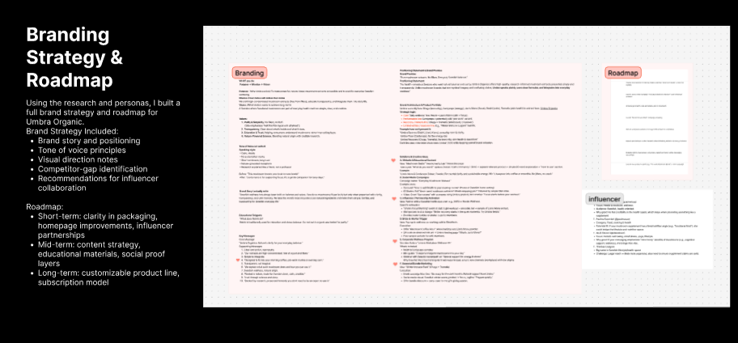
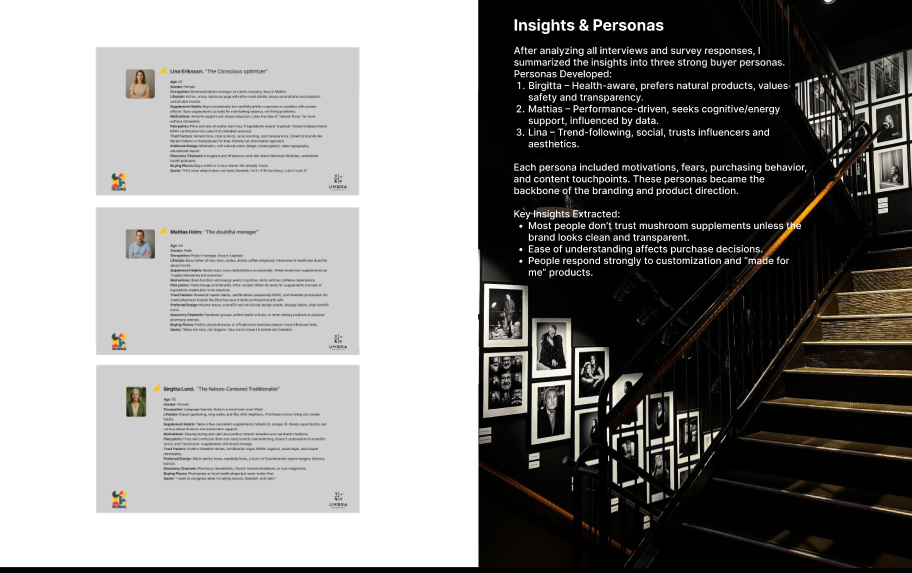
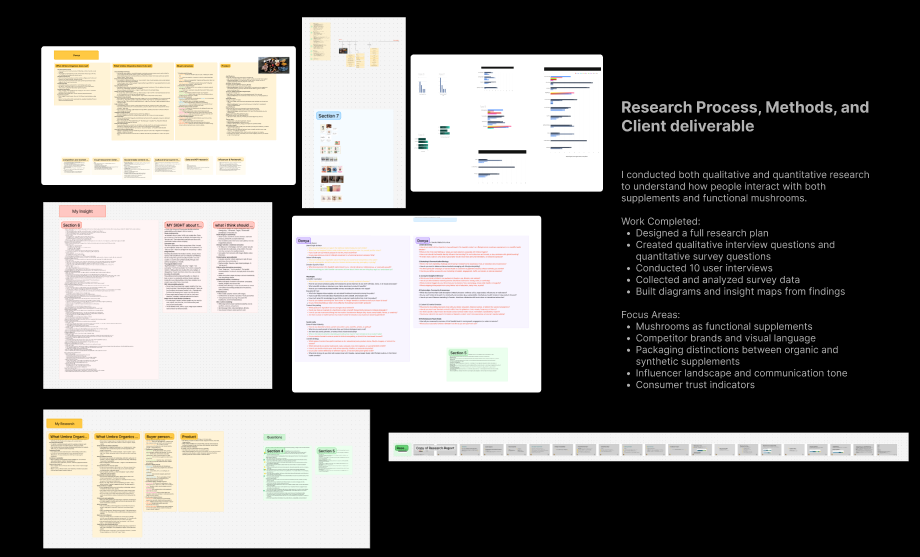
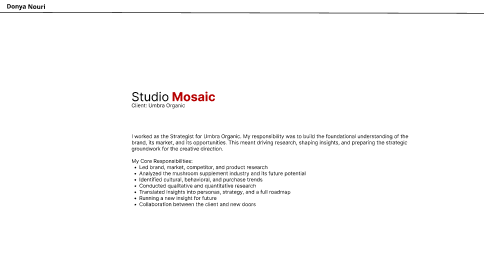

Studio Mosaic/Umbra Organic
I worked as the Strategist for Umbra Organic. My responsibility was to build the foundational understanding of the brand, its market, and its opportunities. This meant driving research, shaping insights, and preparing the strategic groundwork for the creative direction.
My Core Responsibilities:
- Led brand, market, competitor, and product research
- Analyzed the mushroom supplement industry and its future potential
- Identified cultural, behavioral, and purchase trends
- Conducted qualitative and quantitative research
- Translated insights into personas, strategy, and a full roadmap
- Running a new insight for future
- Collaboration between the client and new doors
Click any image to view larger.



